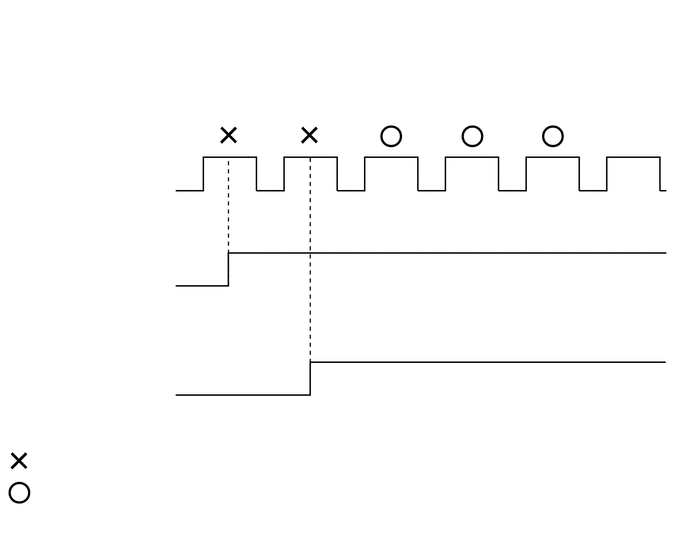
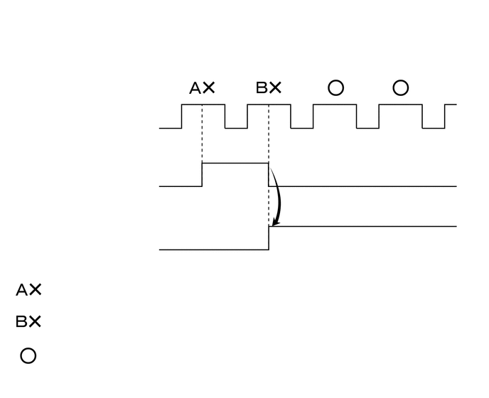

RM3140CG
_51
发动机/混合动力系统
_023949
1ZR-FE 发动机控制系统
_0116049
SFI 系统
D
1ZR-FE 发动机控制系统 SFI 系统 定格数据
描述

2.354,0.135 3.229,0.302
0.875,0.167
10
存储 DTC
1.271,1.031 2.052,1.208
0.781,0.177
10
0.5 秒
0.323,1.031 1.104,1.229
0.781,0.198
10
0.5 秒
0.354,2.792 2.688,2.948
2.333,0.156
10
可以读取的定格数据
2.25,1.031 3.031,1.229
0.781,0.198
10
0.5 秒
存储 DTC 时，ECM 将车辆和驾驶条件信息记录为定格数据。进行故障排除时，定格数据有助于确定故障出现时车辆是运行还是停止，发动机是暖机还是未暖机，空燃比是浓还是稀，以及其他数据。
- 提示：
-
如果即使检测到了 DTC，但故障不能再现，则确认定格数据。
ECM 以定格数据的形式每 0.5 秒记录一次发动机状况。使用 GTS，可检查五组独立的定格数据。
·
DTC 存储前的 3 组数据。
·
DTC 存储时的 1 组数据。
·
DTC 存储后的 1 组数据。
这些数据组可用于模拟故障出现前后的车辆状况。这些数据有助于识别故障原因，以及判断故障是否属于暂时故障。
待定定格数据
- 提示：
-
在第一行程中首次检测到双程 DTC 时，存储待定定格数据。
a.
将 GTS 连接到 DLC3。
b.
将点火开关置于 ON 位置。
c.
打开 GTS。
d.
进入以下菜单：Powertrain / Engine and ECT / Trouble Codes。
- Powertrain > Engine and ECT > Trouble Codes
- 50001 234
e.
选择某一 DTC 以显示其待定定格数据。
- 提示：
- ·
发生下列任一情况时，清除待定定格数据。
·使用 GTS 清除 DTC。
·断开蓄电池负极 (-) 端子电缆。
·恢复正常后，在发动机充分暖机的情况下执行 40 行程。（仅将系统恢复至正常不能清除待定定格数据。）
·存储先前待定定格数据的情况下，如果在第一行程中检测到双程 DTC 时新存储了待定定格数据，则旧定格数据将在下一行程中被新检测到的 DTC 的新数据替代。

0.156,0.104 6.896,0.594
6.74,0.49
10
false
在第一程和第二程均检测到 DTC，但从第三程系统恢复正常时（双程检测逻辑 DTC）：
0.146,1.625 1.24,1.802
1.094,0.177
10
false
点火开关
1.302,1.458 2.115,1.75
0.813,0.292
10
false
ON
1.302,1.844 1.552,2.021
0.25,0.177
10
false
OFF
0.156,2.583 1.198,2.896
1.042,0.313
10
false
待定定格数据
1.333,2.5 1.781,2.698
0.448,0.198
10
false
Stored
1.323,2.781 1.833,3.104
0.51,0.323
10
false
Not Stored
0.125,3.708 1.031,4.438
0.906,0.729
10
false
定格数据
1.292,3.667 1.74,3.865
0.448,0.198
10
false
Stored
0.365,4.698 1.75,4.906
1.385,0.208
10
false
：检测到故障
0.365,5 2.083,5.208
1.719,0.208
10
false
：未检测到故障
2.073,0.885 2.76,1.094
0.688,0.208
10
false
（第一程）
2.823,0.885 3.781,1.125
0.958,0.24
10
false
（第二程）
3.781,0.885 4.74,1.125
0.958,0.24
10
false
（第三程）
4.594,0.896 5.552,1.135
0.958,0.24
10
false
（第四程）
1.302,3.938 1.813,4.26
0.51,0.323
10
false
Not Stored

0.188,0.177 7.063,0.594
6.875,0.417
10
false
在第一程首次检测到双程 DTC 且在第二程首次检测到另一双程 DTC 时：
0.604,1.531 1.521,1.844
0.917,0.313
10
false
点火开关
1.781,1.365 2.302,1.583
0.521,0.219
10
false
ON
1.781,1.719 2.125,1.896
0.344,0.177
10
false
OFF
0.479,2.323 1.542,2.688
1.063,0.365
10
false
待定定格数据 A
0.479,3.271 1.542,3.635
1.063,0.365
10
false
待定定格数据 B
1.781,2.25 2.24,2.417
0.458,0.167
10
false
Stored
1.781,3.156 2.24,3.323
0.458,0.167
10
false
Stored
1.781,2.531 2.24,2.927
0.458,0.396
10
false
Not Stored
1.781,3.448 2.24,3.844
0.458,0.396
10
false
Not Stored
0.677,4.104 3.188,4.344
2.51,0.24
10
false
：检测到待定故障 A
0.677,4.573 3.188,4.813
2.51,0.24
10
false
：检测到待定故障 B
0.677,5.042 2.771,5.271
2.094,0.229
10
false
：未检测到故障
4.198,2.875 5.302,3.052
1.104,0.177
10
false
上传
2.635,0.719 3.333,1.031
0.698,0.313
10
false
（第一程）
3.542,0.719 4.677,0.99
1.135,0.271
10
false
（第二程）
4.604,0.719 5.729,1.052
1.125,0.333
10
false
（第三程）
5.521,0.719 6.719,1.052
1.198,0.333
10
false
（第四程）
定格数据表
- Powertrain > Engine and ECT
-
检测仪显示 Vehicle Speed Engine Speed Calculate Load Vehicle Load MAF Atmosphere Pressure Engine Oil Temperature Sensor Coolant Temp Intake Air Engine Run Time Initial Engine Coolant Temp Initial Intake Air Temp Battery Voltage Glow Indicator Supported Glow Indicator Accel Sens.No.1 Volt % Accel Sens.No.2 Volt % Throttle Sensor Volt % Throttl Sensor #2 Volt % Throttle Sensor Position Throttle Motor DUTY Throttle Air Flow Learning Value(Area 1) Throttle Air Flow Learning Value(Area 2) Throttle Air Flow Learning Value(Area 3) Throttle Air Flow Learning Value(Calculated Value) Throttle Air Flow Learning Value(Atmosphere Pressure Offset Value) Throttle Air Flow Learning Prohibit(Intake Air Pressure Malfunction) Throttle Air Flow Learning Prohibit(Air Fuel Ratio Malfunction) Throttle Position ISC Position Low Revolution Control N Range Status ISC Feedback Learning Torque ISC Total AUXS Torque ISC Feedback Torque ISC Feedback Torque(Recent) ISC AUXS Torque(Alternator) ISC AUXS Torque(Air Conditioner) Throttle Air Flow F/B Value Fuel Pump Duty Injector (Port) Injection Volum (Cylinder1) Current Fuel Type EVAP (Purge) VSV Evap Purge Flow Purge Density Learn Value EVAP Purge VSV Purge Cut VSV Duty Target Air-Fuel Ratio AF Lambda B1S1 AFS Voltage B1S1 AFS Current B1S1 A/F Heater Duty #1 O2S B1S2 O2 Heater B1S2 O2 Heater Curr Val B1S2 Short FT #1 Long FT #1 Total FT #1 Fuel System Status #1 Fuel System Status #2 IGN Advance Knock Feedback Value Knock Correct Learn Value Idle Spark Advn Ctrl #1 Idle Spark Advn Ctrl #2 Idle Spark Advn Ctrl #3 Idle Spark Advn Ctrl #4 Actual VVT Angle #1 Actual VVT Ex Angle #1 VVT Control Status #1 VVT Advance Fail Catalyst Temp B1S1 Catalyst Temp B1S2 Starter Signal Power Steering Signal Neutral Position SW Signal Clutch Switch Stop Light Switch A/C Signal Closed Throttle Position SW Fuel Cut Condition Immobiliser Communication TC Terminal Time after DTC Cleared Distance from DTC Cleared Warmup Cycle Cleared DTC Dist Batt Cable Disconnect IG OFF Elapsed Time TC and TE1 Total Distance Traveled Ignition Trig.Count Cylinder #1 Misfire Count Cylinder #2 Misfire Count Cylinder #3 Misfire Count Cylinder #4 Misfire Count All Cylinders Misfire Count Misfire RPM Misfire Load Misfire Margin Engine Speed (Starter Off) Starter Count Run Dist of Previous Trip Engine Starting Time Previous Trip Coolant Temp Previous Trip Intake Temp Engine Oil Temperature Previous Trip Eng Oil Temp Ambient Temp for A/C Previous Trip Ambient Temp Engine Start Hesitation Low Rev for Eng Start Minimum Engine Speed Fuel Cut Elps Time A/F Learn Value Idle #1 A/F Learn Value Low #1 A/F Learn Value Mid1 #1 A/F Learn Value Mid2 #1 A/F Learn Value High #1 Electric Fan Motor Brake Override System Electric Cooling Fan Low Idle Fuel Cut FC TAU Immobiliser Fuel Cut Immobiliser Fuel Cut History Brake Ejector VSV Electrical Load Signal 1 Electrical Load Signal 2 Engine Speed AFS Voltage B1S1 O2S B1S2 AF Lambda B1S1 Short FT #1 Long FT #1 Fuel System Status #1 Fuel System Status #2